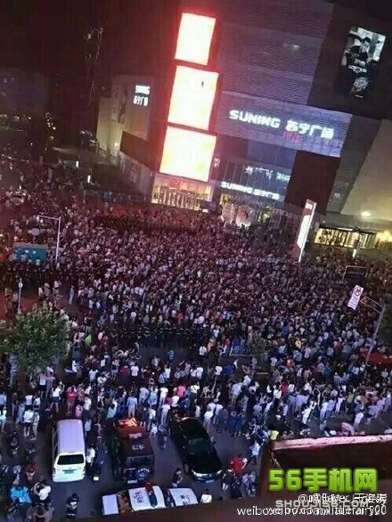

老杨急就章系列（20）
关于连云港散步事件的几点个人看法
by 长沙杨飞
江苏省连云港市要与法国合资建设一个核废料处理厂，但很多当地居民不同意，8月6日夜晚大批市民自发上街散步，和警察起了冲突。上周好几个朋友私信问我能否为此事写几句话。我没有写，因为我没法从各大媒体那了解到具体的情况。
中国是一个和谐社会，大批市民和警察在街头对峙，相当罕见，这可是大新闻。奇怪的是国内媒体都对此轻描淡写，只有几个简短的官方声明。刚开始是告诫市民不得违法游行，然后是辟谣说没有警察打死人，最后是8月10日凌晨连云港市政府的一个简短公告，宣布暂停该项目。

新闻管制据说是为了维护社会稳定。但是在网络时代，这种做法可能适得其反。微信和微博上各种照片和视频满天飞，我看到街头挤满了市民，有人被打伤，是否死亡不清楚。当地警察无法维持秩序，然后我看到大量军车正在开进连云港市区。本来我以为会有更火爆的军人和市民冲突的视频传出。还好没有。
新闻管制看起来是维稳，其实是一种鸵鸟行为，其结果之一就是谣言满天飞。中国各级政府以前惯于撒谎，信誉扫地，越辟谣越没人听。在这种情况下，正确的做法应该是放任媒体跟进报导，甚至让电视台开着转播车去直播。大家眼见为实，也就没什么可传谣的了。
市民通过和平游行的方式表达他们的意见，这是他们的正当权利。《中华人民共和国宪法》明文规定了公民有游行示威的自由。但是1989年又通过了《集会游行示威法》，对游行示威做出了诸多限制。这是不是自相矛盾或者涉嫌违宪？
Well，这个世界基本的原则应该是：人人生而自由，但你的自由不得影响别人的自由。对于有组织的大规模游行，事先需得到公安部门的批准，这是可以理解的，因为游行示威势必影响交通。但每一次游行，如果都要求对公共交通和他人的出行没有一点影响，那任何游行示威都不可能进行，宪法赋予公民的基本权利就会变成一句空话。我个人觉得1989年游行示威法的细节有待修改，限制太多而权利太少。
正因为如此，现在中国某些城市出现了一种非正式游行，或者说集中散步。前几年厦门出现过，现在的连云港也基本属于此类。市民晚饭后自发散步，没有正式的组织者或发起人，在非工作时间，对生产影响不大，个人觉得这种行为应该被许可。市民有意见，应该通过各种表达渠道予以体现。
对这个核废料再处理项目，很多市民其实缺乏基本了解，以为就是在本地挖个大坑把核废料埋了，从而造成千古隐患。其实并不是这么回事。从技术上来看，法国的核废料再生技术是世界最好的，安全是有基本有保障的。连云港市政府和市民的沟通工作显然没做好。当然，最好的沟通就是身体力行，把市政府（含家属区）迁往核处理厂隔壁。我相信这样一来市民就没啥好说的了。
我不是专家，但我认为中国要搞核电站，就必须上马核废料处理厂。自己拉屎自己处理，就这么简单。建设核废料处理项目，几百亿的投资，这么大的事，立项和招标应该全程公开和透明，并广泛召开市民听证会，听取各方面的意见。就连云港目前的情况来看，市政府显然没有做到这一点。
这次连云港散步事件，对各级政府来说是很好的一课。教训就是：第一，对于民生相关的大事，切不可偷偷摸摸地搞；第二，对于正当的民意表达，应该要支持而不是压制。不要以为手中有枪就可以心中不慌。当几千乃至上万市民一起出来散步的时候，警察和特警手里的枪还不如烧火棍。当然，军队可以作为最后一道屏障，但是要想一想，养着人民子弟兵应该是用来干什么的。
总而言之一句话，不要以为谁拳头大就有发言权。藐视民意的后果很严重。不管是在鼓浪屿、连云港还是在任何地方，我们都应该倡导一个讲道理而不是讲强权的世界，这才是和谐社会的真正含义。
杨飞，
2016/8/15，长沙
关注老杨作品：
1，杨飞摄影 www.midphoto.com
2，微信：yangfei789288
3，微信公众号：长沙杨飞
4，新浪微博@长沙杨飞
5，推特Twitter@feiyang17
6，Facebook：yangfei999999@hotmail.com